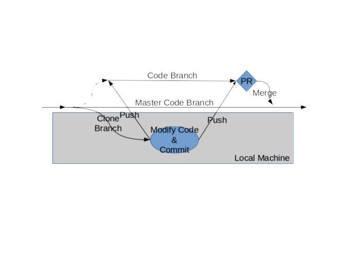

Brian Dolan-Goecke
Version 0.0.1
Copyright 2019 Brian Dolan-Goecke
Slide 30
Brian Dolan-Goecke
Hacking Un*x for 30 year
Started in AT & T SYS VR3
DevOps/Cloud Engineer
Slide 29
Git is a distributed Revision Control System
A great tool for modern distributed teams working on projects.
Slide 28
Git was developed by Linux Torvalds in 2005 after many developers of the Linux kernel gave up access to BitKeeper.
Slide 27.5
Git is Open Source ( Git's Git Repo )
Available client/server on Linux
Easy to use once started
GitHub
Available client for several platforms (I believe servers are also available.)
Used by a lot of opensource projects
Slide 27
Work Code Development
Work Repo's for Puppet, Ansible and other tools.
Personal project, https://github.com/bdgoeko
Personal projects at home...
Slide 26

Original XKCD comic link https://xkcd.com/1597/
Slide 25

Slide 24
(Copy code local)
$ git clone https://github.com/bdgoeko/Presentations.git
You can use a https or an ssh url to clone the code, you usually get this by going to repo.
Slide 23
$ git checkout -b how_i_get
This will create a branch and check it out.
All work you do from now on will be on this branch.
Slide 22
You may want to designate "special" branchs for important purposes.
ie. The Master branch is always the current production code.
and the "dev" branch is always the pre-Production code...
You can enfore this multiple ways, and depends on the server you are using.
see https://git-scm.com/about
Slide 21
We can switch to a different branch.
$ git checkout master
M How_I_Git/how_i_git.html
Switched to branch 'master'
Your branch is up-to-date with 'origin/master'.
$ git branch
AnotherBranchToShowMultipleBranchs
how_i_get
* master
In this case we just switched back to the master branch... we could switch to any branch.
Rember though you are working on that branch then any changes your add and commit will be on that branch!
Slide 22
Now you are ready to edit your code, make the magic changes that will make the World Better....
or at least your code base
So make your changes, edit with your favorite editor.
Slide 20.5
$ git status
On branch how_i_get
Changes not staged for commit:
(use "git add ..." to update what will be committed)
(use "git checkout -- ..." to discard changes in working directory)
modified: how_i_git.html
Untracked files:
(use "git add ..." to include in what will be committed)
How_I_Git_Workflow.png
no changes added to commit (use "git add" and/or "git commit -a")
We have two files here that Git noticed changed. On tracked, ie we already have in our repo and one not.
Slide 20
$ git add how_i_git.html
$ git add How_I_Git_Workflow.png
$ git status
On branch how_i_get
Changes to be committed:
(use "git reset HEAD \..." to unstage)
new file: How_I_Git_Workflow.png
modified: how_i_git.html
Slide 19
These changes look good, the code is functioning we are ready to commit this code.
$ git commit -m "Added graphic of how I Git and added more slides"
[how_i_get f7905ac] Added graphic of how I Git and added more slides
2 files changed, 12 insertions(+), 30 deletions(-)
create mode 100644 How_I_Git/How_I_Git_Workflow.png
Slide 18
At this point you can continue to work and commit changes as long a you like.
But all changes on *ONLY* being local stored, nothing has been "pushed" to the server.
So changes could be lost if you lose your hard drive.
Slide 17
We have made great progress, we have code that is working.
We may want to add more features, or refine some parts, but we can do that later we want to make the code availbe for others to look at.
So it is time to push the code.
This will put the code in the branch on the server.
Slide 16
We are going to do a "git push origin how_i_get"
$ git push origin how_i_get
Username for 'https://github.com': bdgoeko
Password for 'https://bdgoeko@github.com':
Counting objects: 27, done.
Delta compression using up to 8 threads.
Compressing objects: 100% (25/25), done.
Writing objects: 100% (27/27), 52.21 KiB | 5.80 MiB/s, done.
Total 27 (delta 16), reused 0 (delta 0)
remote: Resolving deltas: 100% (16/16), completed with 2 local objects.
remote:
remote: Create a pull request for 'how_i_get' on GitHub by visiting:
remote: https://github.com/bdgoeko/Presentations/pull/new/how_i_get
remote:
To https://github.com/bdgoeko/Presentations.git
* [new branch] how_i_get -> how_i_get
Slide 15
We can either make more changes and go through the git add/commit/push
or
if we are ready we can make a PR (Pull Request ?) or Peer Review ?
Slide 14
Different Git software make PR's in different ways.
In the past I have usually created a PR via the web interface, specifing what branch I am requesting to be merged into master and assigning peer reviewers.
Branch on GitHub
Slide 13
Here again I have often used the web interface to view the changes in the code and see diffferences.
Slide 12
We will take a look on github
Slide 11
Hopefully you understand the basic flow of how I use Git in my development cycle.
$git clone
$ git checkout -b MyNewAwesomeBranch
Make great code
$ git add
$ git commit {-a} -m "I made some great code"
$ git push origin MyNewAwesomeBranch
Create PR
Merge Code
Slide 10
git clone -- ? for multiple repos
git pull .. show user of pull....
shallow clones
git reflog
** Useful comments... Try to add menaingful comments.**
Slide 9
Good tool, open source?
Slide 9
$ git checkout master
error: Your local changes to the following files would be overwritten by checkout:
How_I_Git/how_i_git.html
Please commit your changes or stash them before you switch branches.
Aborting
Slide 5
More than likely not every file you have in the directory is something you want to track, or checkin
You can use a .gitignore to tell git what files/directories you don't want to track
Here is the .gitignore file I am using, this one is located in the base directory of the repo.
You may want/need to exclude files directorys that other intergrations may generate or are are temp files.
Or you may want to ignore files that may have credentials.
$ more ../.gitignore
# -*- mode: gitignore; -*-
*~
\#*\#
/.emacs.desktop
/.emacs.desktop.lock
*.elc
auto-save-list
tramp
.\#*
# Org-mode
.org-id-locations
*_archive
# flymake-mode
*_flymake.*
# eshell files
/eshell/history
/eshell/lastdir
# elpa packages
/elpa/
# reftex files
*.rel
# AUCTeX auto folder
/auto/
# cask packages
.cask/
dist/
# Flycheck
flycheck_*.el
# server auth directory
/server/
# projectiles files
.projectile
# directory configuration
.dir-locals.el
# ignore code that I choose not to distribute
reveal.js*
#ignore vi .swp files
.*.swp
Slide 4
$ git log
commit 010e9237517f67e1405ad2b42c640202a0f9a8d5 (HEAD -> how_i_get, origin/master, origin/HEAD, master)
Author: Brian Dolan-Goecke
Date: Wed Feb 13 22:41:17 2019 -0600
Updated notes on how to view presentations with reveal.js
commit aeca3214ad5ad53c47d30a6b5fe1ebc0bae99725
Author: Brian Dolan-Goecke
Date: Wed Feb 13 22:19:40 2019 -0600
More work on How I GIT, and notes about presentations
...
Slide 3
If you want to undo, remove, take away the last commit
What you are doing in Git is moving the HEAD pointer backwards X links back.
ie. undo the changes that are in the what HEAD currently points to
This can be *VERY* messy, handle with great care... you may way to archive the the whole hierarchy
Slide 2
(ie undo those changes you did that just screwed up the file you wanted... arg.)
$ git checkout {filename}
Slide 1
$ git show remote
$ git checkout filename
$ git status
$ git log
$ git squash
$ git branch -d {branch_name}
$
Slide 0
repo - A tree of source code, short for Reposiary
hURL - a URL, and what A URL look like!
Slide Definitions
The wikipedia page for Git
https://en.wikipedia.org/wiki/Git
Git resoures from git-scm.com (Tutorials, Free Books, Free Videos)
https://git-scm.com/doc
Good Git info about using Git and orgraning your Git/Project https://git-scm.com/about
Slide Additional Resources
Brian Dolan-Goecke
howigit at Goecke - Dolan dot com
Slide exit 0